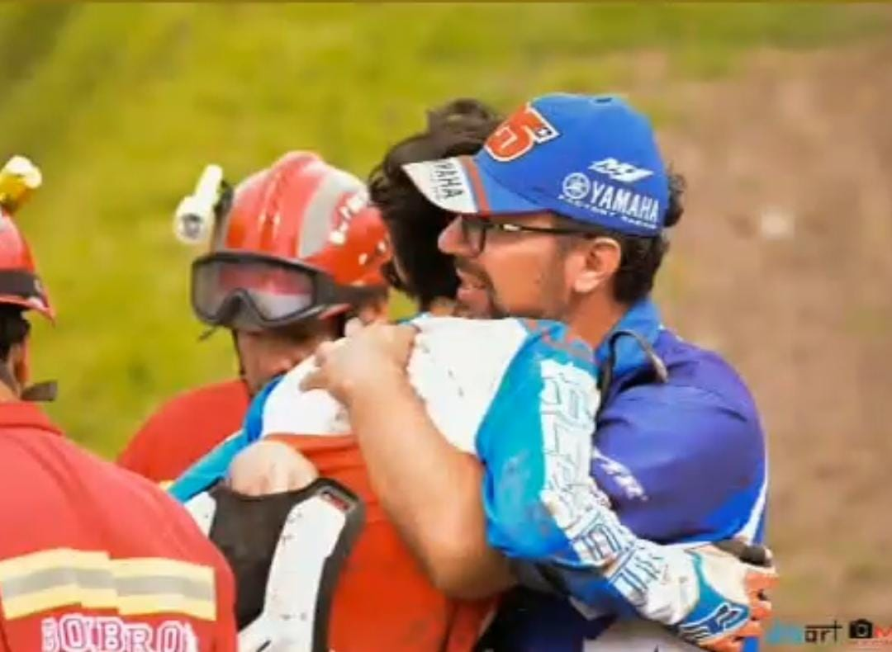
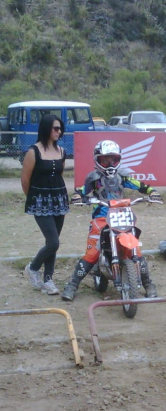
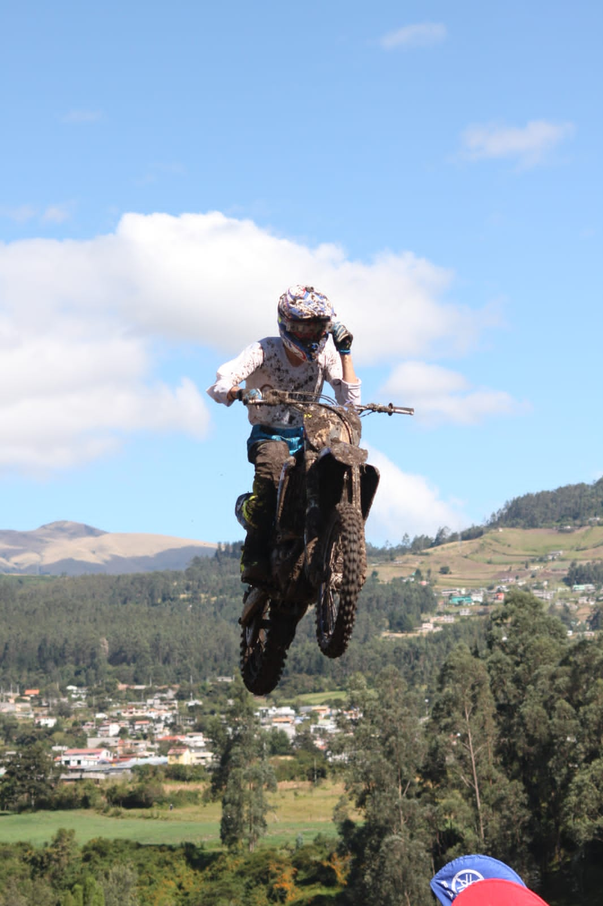
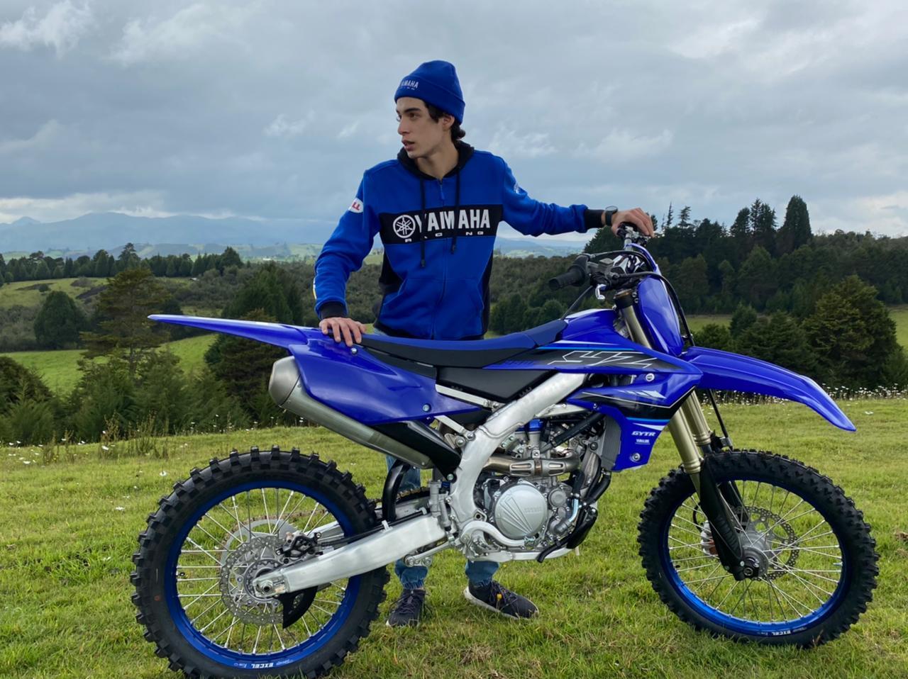

Deporte
Motocross
A Joaquín toda su vida le ha gustado los deportes extremos sobre ruedas, a los 3 años aprendió sin ayuda de nadie a manejar bicicleta y a los 6 años su papá le compró su primera moto y empez'o a entrenar motocross. Desde esa temprana edad su vida se volvió una aventura llena de locuras y adrenalina, en la que participaba en carreras provinciales al inicio; a medida que iba entrenando y mejorando empezó a salir de la ciudad para participar en competencias a nivel nacional en la categoría 65cc.
En toda su trayectoria deportiva ha tenido muchos logros hasta nivel internacional pero no todo siempre se ha dado con triunfos, parte del camino para llegar a alto, le ha costado a Joaquín incontables caídas y lesiones.

Algunas de las lesiones y accidentes más relevantes han sido:
- Rotura de la rodilla y cabeza de la tibia izquierda
- Fractura de la vértebra t5
- Inconsciente por 10 horas
- Tendinitis en la muñeca izquierda
Categorías y Logros
- 65cc (8 a 10 años): Joaquín comenzó directamente en la categoría 65cc (aunque tenía la edad para estar en la categoría 50cc (hasta 8 años)). empezo a coreer a nivel nacional y logró un6to puesto en el campeonato nacional y 3er puesto en el campeonato provincial. Tuvo la oportunidad de correr en Perú, en donde obtuvo un 3er puesto
- 85cc (10 a 16 años): Alcanzó un nivel de manejo bastante alto, con el cual logró clasificar a dos latinoamericanos de motocross (en 2014 y 2015); el primero fue en México y logró obtener el 7mo puesto a nivel de latinoamerica.
- MX2 A (hasta 25 años):Actualmente Joaquín está compitiendo en esta categoría a nivel nacional, es piloto oficial del team Yamaha Ecuador y Motul Ecuador


